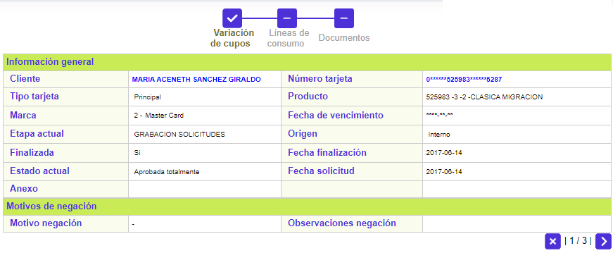

Solicitudes
En este formulario que se invoca desde la Consulta centralizada de tarjeta, la entidad puede consultar la información de las diferentes solicitudes hechas por el cliente y relacionadas con la tarjeta, permitiéndole conocer el estado y etapa actuales asociados a cada una de ellas. El formulario contiene el enlace Detalle.

Descripción de campos
|
Secuencia |
Campo que muestra el número consecutivo asignado de manera automática por el sistema a cada una de las solicitudes ingresadas. |
|
Tipo solicitud |
Este campo indica la clase de solicitud efectuada por el cliente y asociada con la secuencia anterior. |
Fecha ingreso |
Campo que muestra en formato YYYY-MM-DD, la fecha en la cual se registró o ingresó la solicitud en el sistema. |
Tipo crédito nuevo |
Si la solicitud corresponde a Nuevo crédito, en este campo se indica si es: Solo titular, Titular con adicionales o Solo adicional. |
Etapa actual |
Campo que muestra de acuerdo con lo parametrizado para el tipo de solicitud asociada al producto, el código y nombre de la etapa en la cual se encuentra actualmente dicha solicitud. |
Estado Actual |
Este campo indica si la solicitud se encuentra: Aprobada totalmente, Negada totalmente, Aprobada parcialmente, Negada parcialmente o en Zona gris, de acuerdo con el resultado del proceso de avance de la solicitud a través de las diferentes etapas parametrizadas. |
Finalizada |
Campo que muestra Si o No, ilustrando si la solicitud ya terminó su trámite o por el contrario continúa aún en proceso. |
Detalle: Al invocar este enlace, el sistema despliega un wizard de varios pasos, dependiendo del tipo de solicitud, dentro de los que se muestra la información completa de la solicitud.
